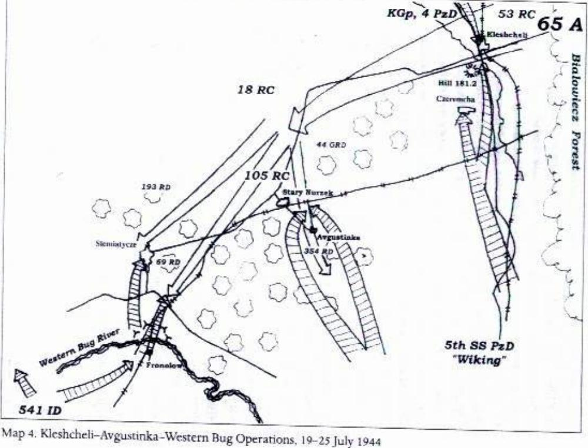
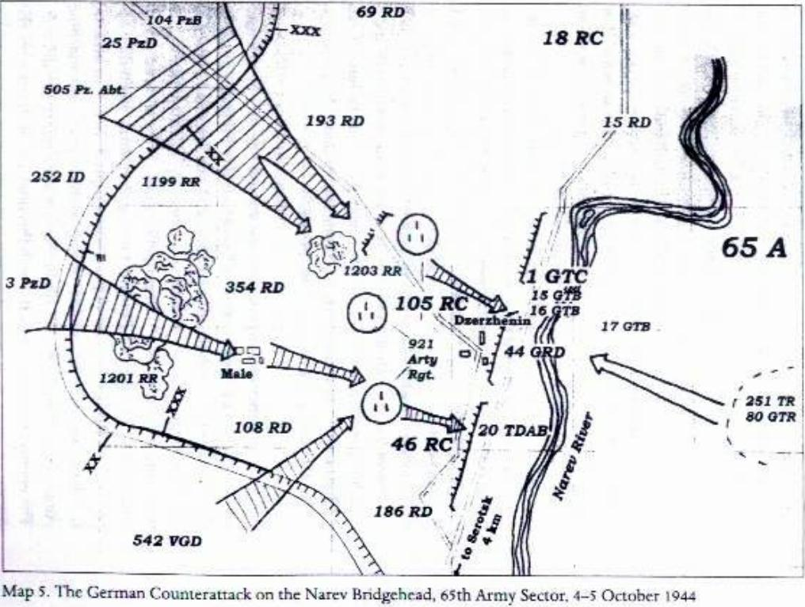

Chương 6

ời chú của Britton:
“Nhiều năm sau chiến tranh, tướng Batov chỉ huy Tập đoàn quân 65 hồi tưởng lại lối tấn công lộn xộn để đến khu vực biên giới cũ sau khi chiếm Bobruisk. Ông viết: “Đặc trưng của việc tấn công trong giai đoạn này là sử dụng rộng rãi các đơn vị cơ động. Mỗi sư đoàn để ra 1-2 tiểu đoàn bộ binh và tăng cường chúng bằng xe tăng và pháo tự hành. Tốc độ tiến công có thể đạt tới 30-40km/ngày. Di chuyển theo những con đường nông thôn song song nhau bằng xe cơ giới, các đơn vị này tiến rất xa trước lực lượng chính, cắt đường rút của địch và tấn công chúng một cách bất ngờ.[21] Lúc đó Litvin di chuyển cùng với ban chỉ huy, không phải trong một đơn vị cơ động hay thậm chí là một đơn vị bộ binh thường, ông không phải nhân chứng cho hoạt động của những đơn vị mũi nhọn. Tuy vậy, ông cho biết một khía cạnh thú vị khác về cuộc tiến công không tách rời khỏi những chuyện ghê sợ của chiến tranh.”
Hai tài xế đều là dân Siberi và lính trừng giới cũ đến sở chỉ huy Sư 354 Bộ binh trước buổi tối cùng ngày 3/7/1944. Sở chỉ huy sư đoàn chỉ cách “Shurochka”, Tiểu đoàn trừng giới của tôi, khoảng 300m. Đến nơi chúng tôi được bố trí vào trung đội lái xe cho chỉ huy sư đoàn. Trung đội trưởng nhận chúng tôi. Đó là một trung uý nhỏ bé như đồ chơi, quen nói năng cộc lốc và thô thiển. Anh ta cho chúng tôi biết rằng chúng tôi chưa được bố trí chính thức và rằng anh ta sẽ phân công nhiệm vụ cho chúng tôi khi nào có hứng. Chúng tôi sẽ phải di chuyển cùng với sở chỉ huy sư đoàn và vì rằng chúng tôi là những tài xế chưa có xe nên chúng tôi sẽ phải chấp nhận đi bộ. Hôm sau, ngay từ sáng sớm chúng tôi đã phải đi bộ tới Baranovichi. Dọc đường lính tráng di chuyển thành hàng dài khiến bụi bay mù mịt. Đó là một ngày ấm áp nhưng chúng tôi chẳng có nước hay thức ăn. Chúng tôi đi suốt cả ngày. Tăng và pháo đã đi trước chúng tôi vì chúng tôi chỉ thấy toàn xe hậu cần và những đơn vị bộ binh lớn. Quân ta cứ thế tiến mà chẳng có một hình thức nguỵ trang nào. Không quân địch đã không còn làm chúng tôi phải lo lắng và chúng tôi cũng chẳng phải đương đầu với lực lượng địch nào trên mặt đất. Chúng tôi đi được 40km ngày hôm đó và hôm sau được lệnh tiến tiếp thêm 60km nữa.
Một nhiệm vụ không mong muốn
Tuy nhiên sáng hôm sau Sư trưởng đã yêu cầu Sashka và tôi mang 6 tù binh về Sở chỉ huy Quân đoàn. Nó nằm về phía sau 18km trên quãng đường mà chúng tôi vừa đi qua. Trước khi đi, chúng tôi được dặn là có thể đối xử với đám tù binh thế nào cũng được nếu cảm thấy mệt mỏi vì phải hộ tống chúng. Tôi hiểu điều đó có nghĩa là những tên tù binh đã bị chỉ định để hành quyết và tôi sẽ trở thành đao phủ. Không ai trong số những tên tù là sĩ quan mà tất cả đều là lính dự bị động viên với nhiều độ tuổi khác nhau. Trong đó có một tên còn trẻ, khoảng 17 tuổi, cao và gầy trông rất giống một con bù nhìn giữ dưa vì mặc một cái áo khoác quá khổ so với thân hình gầy gò của hắn. Những tên còn lại đều già hơn nhiều và đã có gia đình.
Nhóm tù binh chậm chạp di chuyển, những tên già trong số chúng không thể đi bộ nhanh được. Trông chúng đều có vẻ mệt và đói. Sashka hai lần đề nghị hành quyết chúng nhưng tôi không đồng ý. Nhưng Sashka liên tục nhắc nhở tôi về lời gợi ý bóng gió của Sư trưởng hãy sớm tống khứ mấy tên tù. Tôi không muốn bắn tù binh, nhưng tôi cảm nhận được sức nặng của mệnh lệnh, tôi cũng biết rằng có tới hàng chục nghìn tên Đức sa lưới sau thành công của chiến dịch và các trạm thu gom tù binh đang bị tràn ngập. Sáu tên tù binh này chẳng có giá trị gì nhất là trong một cuộc chiến tàn bạo như thế này Đến một chỗ, Sashka dừng đám tù binh và thúc chúng rời con đường. Rõ ràng bọn tù binh hiểu ý định của Sashka và không rời mắt khỏi khẩu tiểu liên của anh ta. Chúng giơ cho chúng tôi xem những bàn tay chai sạn, chúng là công nhân cơ khí trước chiến tranh. Vài tên nhìn vào mắt chúng tôi và khóc xin được rủ lòng thương. Tôi cảm thấy rất tiếc cho chúng vì cha tôi trước kia cũng là một công nhân cơ khí và cũng bị gọi nhập ngũ khi có chiến tranh, ông cũng muốn trở về nguyên lành với gia đình. Tâm trạng tôi lúc này hết sức dao động, đặc biệt sau khi chứng kiến cái chết của hai tên tù binh không vũ khí mới đây. Sashka tiếp tục nhắc nhở tôi về nhiệm vụ, chúng tôi lên đạn hai khẩu tiểu liên. Sashka bắn trước và tên Đức trẻ ngã gục xuống đất quằn quại trong đau đớn. Tất cả sự ghê sợ của chiến tranh mà tôi từng chứng kiến cũng không thể sánh bằng lần này, và tôi siết cò. Tôi cảm thấy lợm giọng. Khi tôi đã tĩnh trí trở lại, tôi có thể thấy tất cả số tù binh đã nằm chết trên mặt đất và Sashka đang đứng chờ tôi bên con đường mà chúng tôi đã rời bỏ lúc nãy. Tôi kiểm tra lại khẩu tiểu liên và thấy nó đã mất rất nhiều đạn và bỗng chốc tôi hiểu điều gì đã xảy ra.[22] Trong những ngày tiếp theo khi chúng tôi tiếp tục tiến lên, tôi đã bị dằn vặt bởi những gì đã thấy ở Bobruisk và bởi những gì Sashka và tôi đã làm với những tên tù binh. Tôi đã tham chiến và giết một kẻ địch có vũ khí trong trận đánh không là vấn đề. Nhưng việc tàn sát hàng đống quân Đức đang cố thoát khỏi vòng vây ở Bobruisk, hành quyết tại chỗ tên Nga phản bội, trả thù dã man bằng cách lôi ra khỏi hàng và giết chết tên tù binh Đức, hành quyết những tên lính dự bị mới đây làm đầu óc tôi tràn ngập những hình ảnh khủng khiếp của giết chóc và cái chết. Tôi cảm thấy phát bệnh vì cuộc chiến này. Để quay lại sở chỉ huy Sư 354 Bộ binh, chúng tôi đã trèo lên đi nhờ một chiếc xe tải chở đồ hậu cần cho sư đoàn. Dọc đường về, tôi nói chuyện với một người đồng chí trên xe, một người Gypsy tên là Ganzha.
Về đến sở chỉ huy tôi chú ý đến một người với bộ ria nhỏ trông giống của Charlie Chaplin, mọi người đang lăng xăng quanh ông. Đó là Đại tá Vladimir Nikolaevich Dzhandzhgava vừa mới nhận chức Sư trưởng từ Dmitri Fedorovich Alekseev. Alekseev được chuyển sang chỉ huy Quân đoàn 105 Bộ binh từ trước Chiến dịch Bagration. Đại tá Dzhandzhgava trước đây chỉ huy Sư đoàn Bộ binh 15 “Sivash”.
Thiên chuyển lần nữa
Chúng tôi gấp gáp di chuyển tới Baranovichi và sau đó là Slonim rồi Bialystok, sử dụng mọi cách và mọi phương tiện vận tải có thể. Nhiều lính bám vào từ xe chở đồ hậu cần và xe ngựa của nông dân đến xe tăng và pháo tự hành để nhảy lên xin được đi nhờ. Nhiều người khác đi bằng xe kéo bởi ngựa, bò và thậm chí cả dê tịch thu được. Chúng tôi nhanh chóng vượt qua Baranovichi và đến Slonim vào buổi trưa. Thành phố hoàn toàn trống rỗng. Mọi người dân đều ở trong nhà để giữ mạng sống. Vì chúng tôi phải tới Bialystok gấp nên tôi không để ý thấy có sự vi phạm kỷ luật nghiêm trọng nào ở Slonim. Sashka và tôi đã trải qua xấp xỉ một tuần ở trung đội lái xe cho sở chỉ huy rồi sau đó được thiên chuyển tới Tiểu đoàn Vận tải Độc lập số 473 thuộc Sư đoàn Bộ binh 354.
Đại uý tiểu đoàn trưởng Afana’ev và sĩ quan quân lực của ông là Thiếu uý Gorshkov tỏ ra thích kinh nghiệm của chúng tôi. Sashka trước đây từng làm việc với xe tải pickup còn tôi mới chỉ làm việc với xe jeep Willy, nhưng thế là tuyệt rồi! Tiểu đoàn vận tải đang có một chiếc Willy hỏng mà không ai sửa được, họ chuyển nó cho tôi kiểm tra và tôi bắt tay vào việc sửa chữa. Sau hai ngày tôi đã khiến chiếc xe “trở lại trên đôi chân của chính mình” và được chỉ định luôn làm người lái nó. Thật tuyệt vời, sau tất cả thì được lái xe lòng vòng cũng tốt hơn đi bộ lòng vòng. Chiếc Willy đã sửa xong và tôi được bố trí phục vụ Sư đoàn phó, Trung tá Davydkin. Sau một tuần du ngoạn cùng Trung tá Davydkin tôi đã biết được tất cả các đơn vị của sư đoàn. Vào lúc này chiến sự đã tiến tới khu vực biên giới cũ. Một hôm, trước khi rời sở chỉ huy, Davydkin thông báo chúng tôi sẽ tới một trang viên lớn ở khu rừng Bialowiecz. Chúng tôi tới nơi vào buổi trưa. Trang viên đã bị tàn phá nặng nề. Chúng tôi thấy Đại tá Dzhandzhgava ở đó cùng nhiều sĩ quan khác. Tại đó tôi cũng trông thấy lần đầu tiên chỉ huy Tập đoàn quân 65 của tôi, Trung tướng Pavel Ivanovich Batov. Trời nắng chói chang nhưng không có cuộc viếng thăm nào của không quân địch. Batov lệnh cho cánh lái xe chúng tôi chỉ được phân tán vào khu rừng sát cạnh trong trường hợp bị tập kích đường không. Chúng tôi vượt biên giới Ba Lan tại huyện Biabzhega. Tin đồn lan truyền trong binh lính rằng đây chính là nơi chỉ huy Phương diện quân Rokossovskii ra đời, họ tránh trang trại nơi cha mẹ ông đã sống. Ngay sau khi vượt biên giới Ba Lan tôi nhận thấy sự thay đổi trên mặt đất. Các trang trại được sắp xếp gọn gàng, đất đai được cày xới cẩn thận. Tôi có thể cảm nhận thấy tinh thần cá nhân chủ nghĩa, theo tất cả những người nông dân ở đây, mọi thứ đều là “của tôi”, trong khi đó ở Liên Xô mọi thứ đều là “của chúng ta” trong các nông trang tập thể. Chúng tôi hỏi những người nông dân: “Sao các anh không làm việc cùng nhau, trong hợp tác xã chẳng hạn?” Và họ trả lời: “Của tôi á?”. Trong những ngày đầu tiên, những người Ba Lan địa phương nhìn những Đảng viên Cộng sản như thể trên đầu họ mọc vài cái sừng và nhìn chúng tôi, những người Siberi, như những tên ăn thịt trẻ con.
Kleshcheli và Avgustinka
Lời chú của Britton:
“Ngày 28/6/1944, Hitler thải hồi Thống chế Busch khỏi chức chỉ huy Cụm Tập đoàn quân Trung tâm và chỉ định Thống chế Model thay thế. Model tiếp quản nhiệm vụ chỉ huy những mảnh vụn còn lại của Cụm Tập đoàn quân Trung tâm trong khi cùng lúc đó vẫn đang chỉ huy Cụm Tập đoàn quân Bắc Ukrain tiếp giáp với Cụm Tập đoàn quân Trung tâm về phía Nam. Nhiệm vụ của Model là cố gắng vá lỗ thủng rộng 450km trên tuyến phòng ngự Đức đã bị xé toạc do Chiến dịch Bagration. Cách bổ nhiệm chỉ huy bất thường này cho phép Model phối hợp hoạt động của hai Cụm Tập đoàn quân, và Hitler cho rằng nhờ đó Model có thể thực hiện nhiệm vụ. Tuy nhiên vào thời điểm đó người Đức hoàn toàn không có đủ các sư đoàn và khả năng vận tải cần thiết để giải quyết vấn đề và Model đã không bao giờ có thể lấp hoàn toàn được các lỗ thủng trên chiến tuyến của Cụm Tập đoàn quân Trung tâm. Lúc này các chỉ huy Soviet đã trở nên cực kỳ lão luyện trong việc phát hiện ra các điểm yếu và các lỗ hổng trên tuyến phòng ngự Đức và có đủ khả năng cơ động để khai thác các cơ hội đó. Đến giữa tháng 7, một lỗ hổng như vậy đã xuất hiện ở khu rừng Bialowiecz, một khu vực đầy du kích phía đông bắc Brest – Litovsk. Không may cho Model, chỉ có một đơn vị cơ giới Hungary nhỏ tuần tra khu rừng này một cách hời hợt. Khu rừng nằm tiếp giáp giữa vị trí của Quân đoàn 23 Đức, đơn vị đang vừa phải cố gắng chống giữ cái túi Pinsk đang tan vỡ dần lại vừa phải cố rút khỏi nó, và Quân đoàn Harteneck, đơn vị đang cố gắng bảo vệ Bialystok về phía bắc. Chỉ một chút áp lực nhỏ của Hồng quân vào ngày 13/7 cũng đủ xé toang phần tiếp giáp giữa hai Quân đoàn này. Chỉ huy Phương diện quân Belorussia 1, tướng Rokossovskii, đã cho Tập đoàn quân 65 mở toang lỗ hổng này dọc theo một con đường lớn đi qua các làng Ba Lan là Kleshcheli và Siemiatycze tới sông Western Bug. Ngay sau khi vượt sông, Tập đoàn quân 65 đã cắt đứt tuyến vận tải hậu cần của Quân đoàn 23 Đức và đe dọa trực tiếp Brest – Litovsk từ hướng bắc. Mối đe dọa này buộc quân Đức phải phản ứng tức thì, đó là những gì Litvin mô tả sau đây.”[23]
Mặc dù đã trông đợi một sức kháng cự mạnh, chúng tôi lại vượt qua rừng Bialowiecz khá dễ dàng và nhanh chóng. Xuyên qua rừng và trên cả các khu vực tiếp theo, tốc độ tiến công của quân ta khá nhanh vì các đơn vị cơ động đặc biệt đi trước đã đánh bại sức đề kháng của địch. Các đơn vị tiền tiêu của Tập đoàn quân 65 đến sông Western Bug và thiết lập nhiều đầu cầu nhỏ bên kia sông gần Siemiatycze (xem bản đồ). Mũi nhọn của Tập đoàn quân nhanh chóng đào công sự trong khi chờ đợi lực lượng chính quân ta tới. Tuy nhiên, Tập đoàn quân của tôi đã vượt quá xa hai tập đoàn quân tiếp giáp ở bên trái và bên phải là Tập đoàn quân 28 và Tập đoàn quân 46 từ 30km đến 40km nên đã để hở sườn. Chỉ huy quân Đức phát hiện ra điểm dễ bị tổn thương đó của Tập đoàn quân 65 và quyết định bao vây tiêu diệt.

Lời chú của Britton:
“Tập đoàn quân 65 xuyên sâu vào khe hẹp giữa Quân đoàn 23 Đức ở phía nam và Quân đoàn Harteneck ở phía bắc dọc con đường lớn đi Siemiatycze. Model nhận thấy có cơ hội cắt đôi Tập đoàn quân 65 bằng cách tung hai gọng kìm tấn công vào cổ mấu lồi ở Kleshcheli. Sư đoàn thiết giáp SS số 5 “Wiking” thuộc Quân đoàn 23 đánh vào Kleshcheli và Avgustinka, một ngôi làng nằm giữa con đường nối Siemiatycze và Kleshcheli từ phía nam. Mũi tấn công của Sư đoàn thiết giáp 4 thuộc Quân đoàn Harteneck cũng tấn công Kleshcheli từ phía bắc, cố gắng hội quân với mũi nhọn tấn công của Sư 5 Thiết giáp SS là Trung đoàn “Westland”. Cuối cùng là Sư đoàn Bộ binh 541 thuộc Quân đoàn 20 tấn công trực diện vào mũi nhọn quân Nga với nhiệm vụ loại trừ đầu cầu yếu mà Tập đoàn quân 65 mới lập được bên kia sông Western Bug.”
Tại khu vực làng Kleshcheli, quân địch với xe tăng cố gắng cắt đứt và bao vây các đơn vị của Tập đoàn quân 65 đang vượt sông Western Bug. Xe tăng địch đã hội quân được với nhau nhưng không thể ngăn hẳn được mũi tấn công của Tập đoàn quân. Hành lang tấn công – chỉ rộng khoảng 1km – vẫn giữ được dọc con đường từ Kleshcheli đến Avgustinka và xa hơn nữa đến sông Western Bug. Các cuộc phản công của bọn Đức đã buộc Tập đoàn quân 65 phải rút các đơn vị dẫn đầu khỏi bờ bên kia sông Western Bug và tiến hành các trận đánh dữ dội nhằm mở lại tuyến đường hậu cần an toàn. Các bộ phần của Tập đoàn quân 65 bao gồm cả Sư đoàn Bộ binh 354 lập một vành đai phòng thủ ở Avgustinka để chờ tiếp tế.
Lời chú của Britton:
“Cuộc chiến nhanh chóng trở nên hỗn loạn. Vào lúc quân Đức phản công vào Kleshcheli, các đơn vị thuộc Tập đoàn quân 65 Soviet ở Avgustinka và xa hơn nữa cũng nhưng Sư đoàn Thiết giáp SS “Wiking” Đức đều không có tuyến hậu cần an toàn. Tiếp tế trở thành yếu tố quyết định kết quả trận đánh.”
Ngay trước thời điểm quân Đức phản công, Sư đoàn phó đang gặp gỡ Sư trưởng. Sở chỉ huy của Đại tá Dzhandzhgava được đặt tại một nhà thờ trong làng Avgustinka. Các đơn vị của sư đoàn đóng cách Avgustinka từ 6km đến 8km về phía tây và phía nam, đang cố gắng hội quân với Quân đoàn 4 Kỵ binh Cận vệ, Quân đoàn này đã chọc thủng chiến tuyến Đức ở xa hơn về phía đông và nam. Những cuộc phản công đầu tiên của quân Đức đã buộc các đơn vị của sư đoàn rút lui về lập một vành đai phòng thủ trong mấy khu rừng cách Kleshcheli 10km-12km về phía tây. Trưa hôm sau, ngày 23/7, tình hình sáng sủa hơn vì các đơn vị vòng ngoài của sư đoàn vẫn ngoan cường và mưu trí chống trả được các đợt tấn công của lực lượng Đức. Sư đoàn phó nhận lệnh đích thân dẫn đầu đoàn tiếp tế tới Avgustinka mang theo đạn dược và lương thực. Chỉ huy tiểu đoàn vận tải được lệnh chuẩn bị một số xe tải còn tôi cũng được lệnh chuẩn bị cho chiếc Willy.
Đã nhiều ngày nay chiếc Willy chạy không được tốt. Ở đâu đó trong hệ thống nạp nhiên liệu bị rò khí khiến máy xe không được tiếp đủ lượng xăng như bình thường khi vận hành liên tục. Tôi không thể sửa chữa tại chỗ, vì vậy tôi đành lái từng quãng ngắn 3km-5km, sau đó dừng lại và dùng bơm thổi vào hệ thống tiếp liệu. Việc bơm này sẽ tăng áp lực xăng khiến máy xe có thể vận hành trôi chảy trong 7 phút-10 phút tiếp theo. Sau 3km-5km, tôi sẽ phải dừng và lặp lại quá trình đó. Tôi sợ sẽ bị chết máy giữa đường tới Avgustinka nơi đang nằm trong tầm bắn của bọn Đức. Để phòng trường hợp đó, tôi móc sẵn một sợi cáp vào ba đờ sốc trước để có thể nhờ một chiếc xe tải kéo đi nếu chết máy.
Sau khi chất đầy đồ hậu cần lên các xe tải, toán tiếp tế tiến về phía đông tới Kleshcheli. Chúng tôi dừng lại giữa làng để Sư đoàn phó Davydkin kiểm tra tuyến đường phía trước. Trong khi chờ đợi, tôi thuyết phục các lái xe khác chú ý đến tôi để khi tôi ra tín hiệu xin giúp đỡ họ sẽ phóng vượt qua và kéo tôi đi. Davydkin tới được rìa phía tây làng Kleshcheli, tại đó xe tăng và bộ binh ta đang bắn nhau với quân địch đang ở ngay bên kia con đường. Bộ binh địch đang chiếm giữ một quả đồi bên trái tuyến đường từ Kleshcheli tới Avgustinka[24], từ vị trí đó chúng bắn vào bộ binh ta ở Kleshcheli và quét đạn lên con đường tới Avgustinka.
Được che chở sau một chiếc xe tăng T34 đang dừng bên rìa con đường dẫn ra khỏi làng từ phía tây, chúng tôi có thể nhận ra bộ binh địch đã thiết lập vị trí cách con đường mà đoàn tiếp tế phải đi qua khoảng 200m. Thỉnh thoảng những khẩu cối của chúng lại nã vài phát. Do nhiệm vụ tiếp tế của chúng tôi là khẩn cấp, Trung tá Davydkin quyết định toàn bộ đoàn xe sẽ cùng lúc phóng hết tốc độ qua khu vực nằm trong tầm bắn của địch. Trong khi đó vị sư đoàn phó này cũng sắp xếp hoả lực yểm trợ cho cuộc di chuyển liều lĩnh của chúng tôi bằng lực lượng tăng đang đóng ở rìa làng Kleshcheli. Tôi bơm một khối lượng khí lớn vào bình xăng chiếc Willy để tăng áp lực xăng cho hệ thống tiếp liệu. Chúng tôi sẽ phải đi khoảng 4km dưới hoả lực địch. Trung tá Davydkin trèo vào chiếc Willy của tôi và chúng tôi xuất phát. Tất cả các lái xe được lệnh phóng nhanh hơn bình thường thành một hàng dày đặc, ngay khi bắt đầu bị bắn mạnh mọi người phải tản ra nhưng vẫn tiến về phía trước. Từ rìa làng Kleshcheli tới quả đồi mà quân địch đang chiếm giữ toàn đoàn đã vượt qua an toàn, con đường chúng tôi đi chạy ngay dưới chân đồi. Những chiếc tăng bắn dữ dội vào vị trí địch để buộc bộ binh của chúng phải nằm dán xuống đất. Xe của tôi dẫn đầu đoàn, cả đoàn di chuyển theo sau với mệnh lệnh của Sư đoàn phó là “làm theo bất cứ cái gì mà tôi làm.
Khi tới chân điểm cao đoàn xe vẫn an toàn trước đạn súng nhỏ và súng máy, nhưng ngay sau đó chúng tôi bị bắn bằng súng cối. Tuy nhiên những khẩu cối đó phải bắn cầu vồng qua đồi từ một vị trí bên sườn đồi bên kia, vì vậy chúng không thể nhìn thấy kết quả bắn để hiệu chỉnh đường ngắm hoặc tầm đạn. Con đường khá bằng phẳng và tôi phóng với tốc độ nhanh nhất có thể, tới mức bỏ xa những chiếc xe tải đi sau tới 600m, thoát khỏi tầm đạn địch rồi dừng lại. Chúng tôi quay lại nhìn hàng xe tải đi sau để xem chuyện gì đã xảy ra, phải chở nặng nên chúng đi chậm hơn chúng tôi, nhưng không bị hỗn loạn. Rốt cuộc đoàn tiếp tế của chúng tôi đã tới được với những đồng đội đang bị bao vây ở Avgustinka vào lúc 6h chiều ngày 23/7/1944 chỉ với duy nhất một chiếc xe tải bị mất.
Lời chú của Britton:
“Cuốn lịch sử của Rolf Hinze về chiến dịch này đã xác nhận mũi tấn công của Sư đoàn Thiết giáp số 4 đã chiếm được Kleshcheli chiều tối ngày 23/7 và hội quân được với Tiểu đoàn 1/Trung đoàn Thiết giáp 5 SS nhưng vì thiếu tiếp tế nên cả hai sư đoàn đã phải bỏ Kleshcheli và rút về khu vực xuất phát. Cuộc hội quân này chắc chắn đã diễn ra sau khi Davydkin và đoàn tiếp tế rời Kleshcheli đến Avgustinka.”
Ngay sau khi đến đích, những chiếc xe tải đã bốc đồ hậu cần xuống chuyển cho các đơn vị đủ loại trong vòng vây, trong khi đó Sư đoàn phó đến Sở chỉ huy Sư đoàn bằng chiếc Willy của tôi. Sở chỉ huy nằm trong một nhà thờ trên một quả đồi nhỏ phía tây nam làng, một rừng tùng vây quanh nhà thờ và dưới những tán cây đầy quân ta.
Từ Kleshcheli đến Avgustinka chiếc xe của tôi đã chạy ngon lành. Trong khi Trung tá Davydkin hội đàm với Đại tá Dzhandzhgava trong nhà thờ, tôi đỗ xe cách đó khoảng 80m bên rìa con đường dốc xuống sườn đồi hướng vào rừng, cách rừng khoảng 150m. Mới được khoảng năm phút, khi đang chờ Sư đoàn phó, tôi nghe thấy tiếng vo vo của động cơ máy bay đang bay tới. Tôi nhận ra ngay – đó là những chiếc Junker! Chúng đang hướng thẳng đến nhà thờ. Tôi nhảy khỏi xe và gào lên: “Không kích!” Sau đó tôi đạp vào sau xe để nó lăn xuống dốc mà không cần nổ máy đồng thời nhảy vào trong xe, hướng nó chạy vào rừng nơi mấy chiếc tăng đang đỗ. Khi tôi vừa đến được chỗ đỗ xe tăng trong rừng thì bom bắt đầu nổ quanh nhà thờ. Tôi lao xuống gầm chiếc tăng gần nhất để núp. Trận oanh tạc kết thúc, tôi bò ra từ dưới gầm xe tăng, chạy đến chỗ nhà thờ và nhận thấy không quả bom nào ném trúng nó. Chúng tôi qua đêm tại đó trong khi tất cả những chiếc xe tải trong đoàn ở lại luôn chỗ các đơn vị vừa được họ tiếp tế.
Lời chú của Britton:
“Chiến sự ác liệt tiếp tục thêm ba ngày nữa khi Tập đoàn quân 65 cố gắng bảo vệ tuyến tiếp vận. Quân đoàn Harteneck buộc phải nhanh chóng từ bỏ nỗ lực hội quân với Sư đoàn thiết giáp SS “Wiking” vì bị Tập đoàn quân 48 Soviet tấn công mãnh liệt đến mức có nguy cơ bị tràn ngập. Sư đoàn “Wiking” đã cố gắng chiếm được một vị trí gần Czeremcha, một thị trấn nằm trên tuyến đường sắt chỉ cách tuyến vận tải Kleshcheli – Avgustinka của Tập đoàn quân 65 khoảng 4km về phía nam. Từ những ngọn đồi phía bắc Czeremcha, “Wiking” có thể kiểm soát tuyến tiếp tế này và tấn công các đoàn xe hậu cần của quân đội Soviet. Từ ngày 24 đến ngày 26/7, Tập đoàn quân 65 đã chiếm lại được các quả đồi và thị trấn bằng các trận pháo kích dữ dội và các đợt tấn công liên tiếp bằng bộ binh vào các vị trí của Sư đoàn “Wiking”. Rút cuộc, “Wiking” đã phải bỏ các vị trí đó và rút lui về bên kia sông Western Bug.”
Sáng ngày 24/7, quân ta trở lại với nỗ lực bảo vệ tuyến hậu cần. Cuối cùng chúng tôi đã phá vỡ được vòng vây và tiến về phía trước. Tập đoàn quân 65 đã mất 72h tại khu vực Kleshcheli – Avgustinka.[25] Khoảng một tuần sau, khi đang lái xe trong thành phố Vyshkov để phục vụ một buổi họp thường lệ giữa Trung tá Davydkov và Đại tá Dzhandzhgava thì chúng tôi bị bắn. một mảnh đạn pháo đã xuyên vào cánh mũi tôi và nằm lại đó, tôi có thể nhìn thấy nó bằng mắt. Mảnh đạn thứ hai xuyên vào cổ tôi khiến cổ tôi xưng lên và tôi không thể quay đầu được. Trung tá Davydkin lệnh cho tôi lái xe đến trạm xá. Tới nơi, Davydkin nói với các bác sĩ và y tá: “Các quý cô, hãy chăm sóc cho người đẹp của tôi. Anh ta ngồi cứng đơ đơ như một lá bài và muốn quay đầu thì phải quay cả người như một con chó sói.” Họ đặt tôi nằm lên bàn, gây mê và chờ tôi ngủ. Nhưng tôi không thể ngủ được, bác sĩ O.L. Baryshnykova bảo tôi: “Gì thế này, hay anh uống tí vodka nhé?” Tôi trả lời: “Không.” Và cô ta hỏi tiếp: “Sao anh lại không thể ngủ được nhỉ?”. Họ cho tôi thêm một liều thuốc mê nữa, chỉ đến lúc đó tôi mới ngủ được. Tôi đã có một giấc mơ, trong đó tôi vẫn là chỉ huy tổ súng máy và các tổ viên quay về sau một cuộc đột kích trinh sát với một tù binh là lính Vlasov. Trong mơ tôi phát hiện ra tên tù là anh trai Masha, cô y tá hiện đang là bạn gái Trung tá Davydkin. Các đồng đội hỏi tôi phải làm gì với hắn và trong mơ tôi gào lên: “Bắn hắn!” Khi tôi tỉnh dậy sau cuộc phẫu thuật, mấy cô y tá cười cười: “Anh đã bắn ai thế?” Họ đã khâu lại các vết thương và tôi nhanh chóng quay được cổ một cách dễ dàng.
Vài ngày sau, trong một cuộc gặp thường lệ với Sư trưởng tôi được biết tài xế chiếc GAZ-57 của ông cũng đang bị thương. Họ đã mang anh ta về trạm xá dã chiến rồi chuyển về bệnh viện tuyến sau. Các chỉ huy quyết định để tôi ở lại tiền tuyến, một viên tiểu đoàn trưởng của Đại tá Dzhandzhgava cho tôi biết tôi sẽ phải ở lại chỗ Sư trưởng cho tới khi người ta tìm được một tài xế thay thế khả dĩ. một lần khi đang trên đường đi đến chỗ Sư trưởng, xe tôi bị chết máy và tôi kẹt lại giữa đường một lúc – khoảng 20 phút. Khi tôi đến được sở chỉ huy, Tham mưu trưởng Sư đoàn đã tra hỏi tôi về lý do chậm trễ và nơi tôi đã dừng lại. Việc tra hỏi này không phải tình cờ – ở vùng này đã có nhiều trường hợp các sĩ quan và binh lính quân ta biến mất không dấu vết. Những du kích dân tộc chủ nghĩa Ba Lan đang hoạt động trong vùng và thỉnh thoảng có những nhóm nhỏ quân Đức tìm cách phá vây. Trong lần đi cùng Đại tá Dzhandzhgava đầu tiên, ông đã hỏi tôi về cha mẹ và những gì đã trải qua. Rất có khả năng ông chính là người đã ra lệnh cho tôi ra khỏi tiểu đoàn trừng giới thay vì nhận Huân chương sao đỏ.
Đầu cầu Narev
Sông Narev chảy qua vùng đông bắc Ba Lan, bắt đầu từ khu rừng Bialowiecz thuộc Belorussia chảy về phía nam thành một hình vòng cung dài hơn 400km rồi đổ vào sông Vistula ở phía bắc Warsaw. Sau khi chống lại được các cuộc phản công của bọn Đức tại khu vực Kleshcheli và Avgustinka, quân ta vượt qua sông Western Bug tiến về phía tây với tốc độ chậm lại một chút. Chiến dịch Bagration đã làm bọn Đức kiệt sức nhưng nó cũng làm cả chúng tôi kiệt sức. Chúng tôi liên tục truy kích địch trong khi chúng cũng liên tục chặn bước tiến quân ta bằng các vị trí phòng thủ kiên cố và các cuộc phản công cục bộ.
Chỉ huy Phương diện quân Rokossovskii lo rằng Phương diện quân của ông sẽ rớt lại phía sau trong cuộc đua đến nước Đức, vì vậy ông ra lệnh cho Tướng Batov chỉ huy Tập đoàn quân 65 chiếm một đầu cầu vượt sông Narev không muộn hơn tuần đầu tháng 9. Rokossovskii chỉ định một khu vực giữa Pultusk và Serotsk, phía bắc Warsaw, là địa điểm lập đầu cầu của chúng tôi và nó phải đủ lớn để làm bàn đạp mở một cuộc tấn công lớn vào sâu trong đất Đức. Vào lúc đó các Sư đoàn của Tập đoàn quân 65 đang ở trong tình trạng yếu kém. Chúng tôi đã tiến hơn 600km kể từ khi Chiến dịch Bagration bắt đầu và trong hai tháng rưỡi kể từ ngày đó chúng tôi đã mất hơn một nửa quân số trong những trận đánh liên tục không ngừng. Tuy nhiên, sáng ngày 5/9/1944, những cỗ xe tăng thuộc Quân đoàn Xe tăng Cận vệ một “Sông Đông” đã vượt sông Narev. Sau đó những chiếc tăng đã cố gắng chiếm được một cây cầu qua sông. Nhưng bọn Đức đã cho nổ mìn chiếc cầu và tấn công vào cả hai đầu cầu khi những chiếc tăng quân ta tiến tới, thậm chí mặc kệ việc trên cầu đầy quân Đức đang rút lui. Những tên may mắn thoát chết còn ở giữa cầu nhảy xuống sông cố bơi vào bờ phía tây. Khúc sông này không có cây cầu hay chỗ nước cạn nào khác và bây giờ quân ta phải vượt qua nó với sự mưu trí và dũng cảm cao độ. Tại điểm này, sông Narev là một chướng ngại vật lớn trên đường tiến quân của chúng tôi. Nó rộng tới 200m và sâu 6m. Quân đoàn Xe tăng Cận vệ một “Sông Đông” tới nơi và được lệnh vượt sông dưới nước. Lúc này một số xe tăng còn khả năng chiến đấu của Quân đoàn đã đi khỏi, chỉ có 18 chiếc đảm nhận nhiệm vụ vượt sông. Tôi đứng xem khi những người lính lái tăng hàn kín tất cả những lỗ thủng và kẽ nứt trên chiếc tăng, đặt những cái ống cao để cấp khí cho máy xe và thoát khói. Sau khi việc đó kết thúc, lính lái tăng nối những chiếc tăng vào nhau bằng dây cáp để đề phòng trường hợp máy xe bị nghẹt chiếc tăng sẽ được xe khác kéo. Khi mọi việc đã xong, chiếc dẫn đầu trườn xuống nước và những chiếc khác nối đuôi nhau lao xuống theo. Họ đã vượt sang bờ bên kia thành công và ngay lập tức triển khai bảo vệ tuyến vượt sông trong khi rất nhiều bộ binh ào ạt chống bè qua sông. Sau khi xe tăng và bộ binh đã qua bờ bên kia, pháo binh bắt đầu vượt sông. Đám lính pháo binh cởi trần trùng trục điều khiển lũ ngựa bơi vượt sông, kéo theo sau những bè chở pháo.
Khi mỗi đơn vị vượt được sông, họ lập tức di chuyển để mở rộng đầu cầu. Trong vài giờ đầu tiên, đầu cầu mới chỉ rộng và sâu khoảng 1,5km. Lính công binh bận rộn lắp một cây cầu gỗ gần Vul’k – Zatorsk, khi cây cầu hoàn thành, các bộ phận còn lại của Tập đoàn quân 65 cũng bắt đầu vượt sông. Đến tối ngày 5/9 hơn một nửa bộ binh quân ta đã vượt sông. Bọn Đức phản ứng lại bước tiến đó theo cách thông thường của chúng là cố đẩy chúng tôi ra khỏi đầu cầu. Chiến sự ác liệt suốt bốn ngày. Chúng tôi đánh để mở rộng đầu cầu trong khi bọn Đức thì cố loại trừ nó. Rút cục, bọn Đức đã thất bại trong việc bóp nghẹt đầu cầu. Các trung đoàn trong sư đoàn tôi đã cắt được tuyến đường giữa Pultusk và Serotsk và tiến được khoảng 8km, sau đó dừng lại đào các công sự phòng ngự kiên cố. Đó là vì chúng tôi không thể mở rộng đầu cầu ra xa hơn nữa, sức chúng tôi chỉ đến thế. Mặc dù đầu cầu vượt sông Narev không được sâu (tại khu vực của Sư 354 Bộ binh nó chỉ sâu chưa được 8km), Rokossovskii vẫn cho rằng nó rất quan trọng và lệnh cho tướng Batov phải kiên quyết bảo vệ bằng được. Sau khi những nỗ lực ban đầu của bọn Đức nhằm đẩy Tập đoàn quân 65 về bên kia sông Narev thất bại, chiến sự tạm ngừng một thời gian. Chúng tôi cố gắng củng cố đầu cầu đến mức tốt nhất có thể trong khi bọn Đức có lẽ cũng đang tái tập hợp và tăng cường lực lượng. Quân ta chỉ nhận được một mức tăng cường nhỏ giọt. Trong khi chúng tôi cần 6.000 người để có đủ sức mạnh ban đầu, chúng tôi chỉ nhận được 800. Trong số những người mới có một số người Moldavi và nhờ họ chúng tôi được biết Moldavi đã được giải phóng. Trong thời gian chiến sự tạm lắng đó, tôi phục vụ với tư cách tài xế của Sư đoàn phó phụ trách tuyến sau Sư đoàn. Hậu cứ Sư đoàn tôi đóng trong một khu rừng thông nằm dọc bờ trái (bờ đông) con sông, giữa Vul’k – Zatorsk và con sông. Chiếc cầu gỗ nằm cách đó khoảng 1km. Trong khu rừng thông đã trưởng thành đó tất cả các bộ phận tuyến sau và các đơn vị cơ hữu của Sư đoàn 354 đóng. Các kho đạn, Tiểu đoàn Vận tải 473, bệnh viện dã chiến sư đoàn và các bộ phận khác đóng ở rìa tây nam khu rừng. Sở chỉ huy sư đoàn, SMERSH, kiểm sát viên, toà án quân sự thì đóng ngay trong làng Vul’k – Zatorsk. Người của tiểu đoàn vận tải và bệnh viện dã chiến sống trong các công sự. Những người bị thương ở trong các lều bệnh viện. Có cả một nhà tắm hơi bằng gỗ súc. Sau nhiều tuần lễ dài tiến công và chiến đấu, những chỗ ở này có vẻ thật xa xỉ.
Chiếc jeep Willy của tôi vẫn chạy một cách tốt nhất có thể – tức là không tốt lắm. Rồi động cơ xe cũng trút hơi thở cuối cùng, vì vậy chúng tôi quyết định thay thế nó bằng động cơ một chiếc “Citroen” chiến lợi phẩm. Việc lắp ráp thay thế này là vấn đề khó khăn trong điều kiện tại chỗ vì những lý do sau:
1- Điểm chốt nối vỏ khớp li hợp với hộp số khác nhau.
2- Chúng tôi phải cắt ngắn bớt trục sơ cấp của hộp số, và chúng tôi cũng phải đối mặt với những sự thay đổi thông thường khác.
Lắp động cơ thay thế vào chiếc Willy mất hơn hai tuần. Cuối cùng tôi cũng lắp lại xong chiếc xe, khởi động và chạy thử. Tôi tăng tốc và vào số một ngon lành chỉ trong một giây, tiếp đó tôi vào số 3 và thế là chiếc xe bắt đầu chạy giật lùi. Điều đó có nghĩa là khi tháo hộp số để cắt ngắn trục sơ cấp tôi đã để lẫn các bánh răng khiến cho hai mức tốc độ hoá thành một tiến và một lùi. Tôi buộc phải tháo hộp số lần thứ ba và chỉnh lại các bánh răng – nhưng không có kết quả. Tôi phải sửa chiếc Willy thêm một tuần nữa và chỉ đến khi tôi kiếm được hộp số của một chiếc xe tải nhẹ Đức chiến lợi phẩm vừa với chiếc Willy thì vấn đề mới được giải quyết. Từ ngày vào quân ngũ, thỉnh thoảng tôi vẫn nhận được thư nhà của mẹ tôi hoặc thư của bố tôi cũng đang phục vụ đâu đó trong Hồng quân. Trong thời gian tạm dừng chiến sự ở đầu cầu Narev, tôi lại nhận được những bức thư mới. Mẹ tôi đang làm việc trong một nhà máy sản xuất makhorki, một loại thuốc lá quấn rẻ tiền rất phổ biến trong những năm khó khăn này. Tôi cũng được biết Leonid, cậu em 15 tuổi của tôi, đang làm việc trong một nhà máy sản xuất động cơ nhỏ. Cậu em 17 tuổi Anatolii thì đang làm việc trong một nhà máy sản xuất đạn của Hải quân. Những bức thư của bố tôi thì cho biết ông đang ở Crimea, sư đoàn của ông đang tham gia vào lực lượng trục xuất những người Tatar khỏi Crimea, nhưng sư đoàn cũng được giao nhiệm vụ chuẩn bị cho hội nghị Yalta của các lực lượng Đồng Minh.
Sau khi động cơ được thay thế, chiếc Willy chạy khá tốt. Một vài ngày sau khi hoàn thành việc sửa chữa, tôi lái xe tới nhiệm sở của Sư đoàn phó và gặp được một sĩ quan quen biết – Thiếu tá Georgii Chirkin. Trước đây, tầm năm 1943 đến đầu năm 1944, anh ta là đại uý trợ lý kỹ thuật cho chỉ huy Tiểu đoàn Vận tải của Tập đoàn quân 91, nơi tôi quen biết anh lần đầu. Sau khi được thăng cấp, Chirkin được gọi lại vào Tiểu đoàn Vận tải / Tập đoàn quân 91 và được bổ nhiệm làm chỉ huy đơn vị phụ trách bảo dưỡng ô tô cho sư đoàn tôi. Chúng tôi chào đón nhau như những người thân trong gia đình. Viên thiếu tá nói anh ta muốn chúng tôi lại làm việc cùng nhau nhưng chỉ huy đơn vị phụ trách bảo dưỡng ô tô chẳng được có bất kỳ trợ lý nào về bất kỳ lĩnh vực nào, vì vậy anh ta không thể bố trí cho tôi. Để được làm cùng nhau, anh ta hứa cho tôi một chỗ trong đội lái mô tô của sư đoàn. Trong khi chờ đợi, tôi tiếp tục đảm nhiệm vị trí lái xe cho Trung tá Davydkin. Trong khoảng giữa tháng 9, chúng tôi được nhận thêm một tốp lính mới vào tiểu đoàn vận tải. Họ là những người đồng chí trẻ măng, tất cả đều sinh năm 1926 và đều đã hoàn thành khoá học lái xe. Nhưng chúng tôi đâu cần thêm lái xe, vì vậy chúng tôi giao cho họ làm những công việc sửa chữa nhỏ các xe cộ hỏng hóc, các việc vặt trong doanh trại và canh gác. Trong số họ có vài người Kiselov, định mệnh rút cuộc đã lôi chúng tôi lại rất gần nhau.

Bản đồ khu vực của Tập đoàn quân 65 trong cuộc phản công của quân Đức vào đầu cầu Narev, ngày 4-5/10/1944.
Thắng lợi trong cuộc tiến công từ Parichi và Bobruisk đã cho phép quân ta qua những trận đánh đẩy lùi chiến tuyến địch 600km chỉ trong vòng hơn hai tháng. Vào lúc này, quân ta đã ép quân địch ra xa khỏi đường biên giới Liên Bang Xô viết. Quân Đức nhận thấy đầu cầu qua sông Narev của chúng tôi như một khẩu súng lục kề vào trái tim nước Đức. Tám giờ sáng ngày 5/10/1944, tôi nghe thấy tiếng gầm thét như sấm dậy của trận pháo kích. Nó nhắc tôi nhớ đến âm thanh mà tôi đã nghe khi những khẩu pháo hạng nặng khai hoả gần Ponyri, nhưng ở đây tôi cách tuyến đầu tới 8km, vậy mà âm thanh của trận đánh vẫn nghe rất rõ. Tình cờ lúc đó tôi đang đứng gác cạnh một kho nhiên liệu. Bọn Đức tấn công hoàn toàn bất ngờ và có vẻ như nhằm vào khu vực Dzerzhenin trên chiến tuyến (xem bản đồ). Chỉ huy tiểu đoàn huấn luyện sư đoàn tôi, Đại uý Grechukha, một người bạn tốt của tôi, sau đó mô tả lại trận đánh bảo vệ đầu cầu như sau: “Không ai nói bọn Đức còn bất kỳ khả năng nào để phản công. Mọi người đều tin chắc rằng quân địch không còn đủ lực lượng hoặc phương tiện cho một cuộc tấn công. Theo các trinh sát của quân ta, bọn Đức đã xây dựng một tuyến phòng thủ dày đặc và nhiều tầng xung quanh đầu cầu của chúng tôi với nhiều công sự cố định và bãi mìn. Căn cứ vào chiến thuật đó và với những hiểu biết gần nhất về quân địch, bộ phận tình báo đã không có thông báo về bất kỳ một lực lượng tấn công nào. Chỉ có vài sĩ quan tình báo chú ý đến một bằng chứng nghe được trên radio địch mà các kỹ thuật viên radio quân ta đã bắt được vào cuối tháng 9. một trạm phát radio đặc biệt của bọn Đức đã hai lần phát một thông điệp mã hoá về sự sẵn sàng chuyển sang tấn công. Thông điệp nghe trộm được đó không cho biết trực tiếp về đòn đánh sắp tới, việc nâng cao tình trạng sẵn sàng chiến đấu của quân ta do thông tin tình báo này đã bị bỏ qua sau đó vì không có cuộc tấn công nào xảy ra. Có vẻ như thông tin trao đổi đó chỉ là một trò bịp khác của bọn Đức.
Đêm ngày 4/10 xem ra không có gì khác với bất kỳ đêm nào trước đó. Thỉnh thoảng có vài loạt súng máy hay vài phát đại bác, những thứ đã trở nên bình thường với chúng tôi, có cảm tưởng như không có điềm báo bất cứ sự đe doạ nào. Theo lệ thường, vào lúc bình minh người ta chuyển bữa sáng nóng từ các bếp dã chiến đến các chiến hào và hầm trú ẩn. Bất thần, một loạt pháo dữ dội gầm lên. Các binh sĩ của Sư 354 Bộ binh chưa từng nghe hoặc có kinh nghiệm về một trận pháo phủ đầu mãnh liệt đến thế của bọn Đức. Chỉ trong vài phút, liên lạc hữu tuyến bị cắt đứt khiến vào lúc này, các binh sĩ tuyến đầu bị mất chỉ huy. Liên lạc vô tuyến cũng bị gián đoạn. Trận pháo chuẩn bị tiếp tục trong vòng 1h, sau đó là cuộc tấn công. Thình lình xe tăng địch xuất hiện từ hướng rừng Budy Tsepelenske. Hướng tấn công nhanh chóng trở nên rõ ràng, đòn đánh chính nhằm vào điểm tiếp giáp giữa các Sư đoàn Bộ binh 193 và 354. một tiểu đoàn của Trung đoàn 1199/Sư 354 không thể đứng vững trước cuộc tấn công đầu tiên và rút lui kéo theo sự rút lui của cả hai tiểu đoàn trong thê đội tuyến trước của Trung đoàn 1202 đang làm dự bị cho họ. Tình thế trở nên nghiêm trọng. Đến 10h sáng, quân địch đã tiến tới tuyến thứ hai trên hàng phòng ngự của ta. Chúng chọc thủng vành ngoài của tuyến phòng thủ này tại khu vực bao quanh phần phía tây khu dân cư Dzerzhenin. Khu dân cư này thực tế đã không còn tồn tại, tại đây chỉ còn tàn tích của những căn nhà đổ nát. Sở chỉ huy tiền tiêu sư đoàn đóng tại đó, trên một đống gạch vụn như vậy, chỉ huy là người phó của Đại tá Dzhandzhgava, Trung tá Vorob’ev. Ông vừa mất hai sĩ quan tham mưu và một điện đài viên trong căn hầm hiện nằm dưới đống đổ nát. Lúc hầm sập bản thân ông đang chạy dọc các chiến hào, tập hợp các binh sĩ bỏ chạy và ra lệnh cho các bộ phận của Sư đoàn ngừng rút lui.” Nhìn bề ngoài, vành ngoài tuyến phòng thủ thứ hai của quân ta nằm đối diện với sườn một khu đất cao. Trong thực tế, lúc này quân ta đã mất toàn bộ chiều sâu phòng thủ và chiến tuyến quân ta đã sụp đổ chỉ còn một tuyến duy nhất được tạo bởi bộ binh, súng bắn thẳng và các pháo đội pháo tự hành. Tất cả họ đồng loạt bắn vào xe tăng và bộ binh địch đang xông tới khi chúng xuất hiện trên đỉnh sườn dốc đối diện. Quân địch không kích liên tục, khói bốc mù mịt, tiếng nổ của súng tiểu liên, súng máy, bom trộn lẫn với nhau không sao phân biệt nổi. Cuối cùng quân địch đã không thể phá vỡ được tuyến phòng thủ cuối cùng này trên đường tiến công, mặc dù chúng đã áp sát được nó.[26]
Thời điểm quyết định nhất của trận đánh là giữa 2h và 4h chiều. Quân địch một lần nữa phối hợp tấn công trên toàn tuyến để chọc ra được tới bờ sông. Đây đó, cũng có vài chiếc tăng Đức đơn lẻ đã xuyên thủng được phòng tuyến và chạy được tới bờ sông. Đúng vào thời khắc nghiêm trọng đó, tiếng gầm của động cơ và những loạt súng máy dài thu hút sự chú ý của mọi người. Những viên đạn lửa rít qua đầu bộ binh ta bay về phía quân thù, xe tăng hạng nặng của ta đã đến! Những chiếc tăng tiến đến các vị trí của bộ binh và dừng lại. Cửa nóc một chiếc mở ra và từ đó bắn lên một loạt pháo hiệu xanh lá cây. Như để hưởng ứng theo, những khẩu pháo trên những cỗ xe tăng hạng nặng còn lại đồng loạt gầm lên, nhiều xe tăng địch bùng cháy. Cuộc đấu tăng tiếp tục trong khoảng 40 phút cho đến khi những chiếc xe tăng Đức còn sống sót bỏ chạy. Lúc này, lực lượng tăng cường tiếp theo cũng tới nơi, đó là pháo đội chống tăng và những người lính bộ binh thuộc Sư đoàn 44 Bộ binh. Những khẩu pháo chống tăng thiết lập vị trí ngay sau hào bộ binh. “Những pháo thủ chết trên càng pháo nhưng quân thù sẽ không vượt qua được” – Đó là một trong những khẩu hiệu của họ trong trận đánh.
Từ đầu đến cuối hôm diễn ra trận đánh bảo vệ đầu cầu, Đại tá Dzhandzhgava luôn luôn hiện diện tại những điểm bị đe doạ nhất dọc chiến tuyến quân ta. Tối ngày 4/10, ông đã lệnh cho các Sư đoàn phó của mình vượt sông đến đầu cầu để trực tiếp chỉ huy binh sĩ dưới quyền. Điện đài viên cao cấp của chỉ huy sư đoàn, Thượng sĩ Konstantin Shebeko sau đó kể lại: “Xe tăng địch chọc thủng chiến tuyến quân ta ở khu vực của Trung đoàn 1199 và áp sát bờ sông Narev ngay cạnh điểm vượt sông của quân ta. Sư trưởng đứng tại vị trí quan sát ngay trên mép nước bờ sông Narev, giữa những khẩu pháo của tiểu đoàn chống tăng, gần như ở ngay tuyến đầu. Từ vị trí này ông quan sát diễn biến trận đánh và không cho phép bất kỳ ai vượt sông rút về bờ trái (bờ đông) con sông.” Đêm đó, một pháo đội pháo tự hành SU-76 vượt sông trên cây cầu mỏng manh và đến được sở chỉ huy sư đoàn, chính là điểm quan sát của Dzhandzhgava dưới triền sông. Những khẩu pháo tự hành này trang bị loại pháo ZIS-3 cỡ nòng 76mm tuyệt vời có sức công phá lớn. Chúng cũng có giáp trước mạnh nhưng giáp sườn thì rất mỏng, nóc và đuôi thì chỉ che bằng vải dầu. Vì bộ giáp yếu kém mà chúng tôi gọi những chiếc SU-76 là “Proshchai, Rodina!” (tức là “Vĩnh biệt, Đất Mẹ!”), nhưng cánh lính lái thường gọi chúng là “Suka” (tức là “con chó cái”) như một sự pha trộn giữa khâm phục và khinh rẻ.
Cách điểm quan sát của Dzhandzhgava và cũng là điểm vượt sông khoảng 1km, Năm khẩu pháo tự hành Marder của bọn Đức đã thiết lập vị trí, chúng bắn vào cây cầu và tất cả những gì đi qua đó. Đại tá Dzhandzhgava lệnh cho chỉ huy pháo đội SU-76 tiêu diệt hoặc đánh đuổi đám thiết giáp Đức đó. Viên chỉ huy này quan sát khu vực, vị trí mục tiêu, lựa chọn phương án chiến đấu rồi ra lệnh vận động. Từ chỗ quan sát thuận lợi của mình, tôi nhìn thấy cỗ pháo tự hành đầu tiên trong pháo đội bắt đầu chậm chạp bò lên dốc bờ sông. Các pháo thủ nạp đạn vào súng chính để chuẩn bị bắn bất ngờ vào bọn Đức. Nhưng ngay khi cỗ pháo leo lên đỉnh dốc bờ sông nó đã trúng một phát đạn và bùng cháy mà chưa kịp bắn phát nào. Tai hoạ giống hệt cũng xảy ra với cỗ pháo thứ hai khi nó cũng định tiến theo chiến thuật cũ. Giờ hai chiếc “Suka” đang bốc cháy. một viên trung uý chạy đến chỗ pháo đội trưởng và đề nghị cho phép thử tiêu diệt quân địch một lần nữa, pháo đội trưởng đang bối rối vì vừa mất hai cỗ pháo đã chấp thuận. Tay trung uý chọn một nhóm tình nguyện gồm lái xe, pháo thủ và thợ máy rồi ra lệnh sau đây cho lái xe và pháo thủ: Tốc độ lớn nhất, chạy qua bên tay phải chiếc “Suka” đang cháy, vọt lên đỉnh dốc bờ sông chỉ cách bên phải nó 1m và bắn. Bắn xong lùi lại hết tốc lực rồi lao sang trái khoảng 200m đến một căn nhà nhỏ ở đó. Từ sau căn nhà đó bắn vào chiếc “Ferdinand” ngoài cùng bên trái, sau đó lại quay lui hết tốc lực và trở lại bên phải các anh.
Lái xe và pháo thủ trèo vào trong chiếc SU-76 đợi sẵn. Những thành viên khác của kíp lái vẫn ở lại phía sau dưới sự che chở của bờ sông. Kíp lái nhỏ bé đã làm chính xác những gì viên trung uý chỉ thị và nhờ được cỗ pháo tự hành cháy che chở một phần họ đã nhanh chóng xác định mục tiêu và khai hoả. Chiếc Marder ở giữa bốc cháy. Quân địch cũng phát hiện được hướng viên đạn bay tới và bắn trả nhưng ở đó chẳng còn gì, chiếc Suka đã quay xuống dốc. Trong khi những cỗ pháo tự hành địch vẫn tiếp tục bắn vào chỗ cũ chiếc SU-76 đã đến được vị trí thứ hai bên cạnh ngôi nhà. Cỗ pháo nhanh chóng nhằm vào chiếc Marder bên trái và bắn cháy nó ngay phát đầu tiên. Địch có vẻ không phát hiện được vị trí mới của kẻ vừa ra tay với chúng nên không chuyển hướng bắn về phía ngôi nhà. Vậy là kíp lái bé nhỏ dũng cảm của chiếc Suka quyết định bắn tiếp phát nữa từ vị trí đó. Lần này đến lượt chiếc Marder bên phải bùng cháy, giờ ba chiếc Marder đã bị bắn cháy, hai cỗ pháo tự hành Đức còn lại rút ra sau đỉnh một quả đồi nhỏ và chuồn mất. Kíp lái thắng lợi và được vinh danh bằng những phần thưởng và huân chương.
Thời tiết dần tốt lên và không quân ta xuất hiện với số lượng ngày một nhiều. Cuối ngày hôm đó, khi tôi đang ngồi gần chỗ Sư trưởng, một thiếu tá ngồi cạnh quan sát trận đánh. Đột nhiên viên thiếu tá hỏi Sư trưởng: “Ông có thấy những bụi cây kia không?” Sư trưởng nhìn kỹ những bụi rậm cách chỗ chúng tôi khoảng 1km và trả lời: “Tôi thấy chúng.” – Và ông có thấy những khẩu pháo Đức dưới những bụi cây đó? – Không, tôi chẳng thấy gì cả. – Thế ông đang ngồi trên cái quỷ gì thế? một phi đội ném bom bổ nhào của quân ta nhanh chóng xuất hiện và nhắm vào mục tiêu mà tay thiếu tá đã chỉ: 1, 2 rồi 3 chiếc cường kích lao xuống và thả bom. Pháo đội Đức đã bị loại khỏi vòng chiến. Mọi thứ trở nên dễ dàng hơn cho quân ta. Những chiếc “Ferdinand” Đức đã rút chạy còn pháo đội của chúng cũng đã bị tiêu diệt. Đêm đó, Sư 37 Bộ binh Cận vệ tới nơi. Sức ép từ quân địch cũng không còn khi bọn Đức nhận ra rằng quân ta đã được tăng cường. Đại tá Dzhandzhgava tái lập chiến tuyến, chuyển Trung đoàn bộ binh 1201 đang ở cánh trái sang cánh phải. Với sự giúp đỡ của Sư đoàn 37 Bộ binh Cận vệ, chúng tôi dần đẩy bọn Đức lui lại được 4km và tái lập được các vị trí phòng thủ đầu cầu. Cơn khủng hoảng đã qua nhưng các trận đánh bảo vệ đầu cầu vẫn tiếp tục cho đến ngày 10/10. Khi trận đánh bảo vệ đầu cầu kết thúc, tiểu đoàn trưởng Tiểu đoàn Vận tải 473 được lệnh chuyển ngay 14 người cho Sở chỉ huy Sư đoàn. Sư đoàn đã chuyển hậu cứ và bổ sung cho các đơn vị tuyến đầu. Tôi nằm trong số 14 người đó. Chúng tôi được mọi người tiễn đi một cách buồn bã: các đồng đội của tôi đã được báo trước điều gì đang chờ đợi chúng tôi.
Tại điểm tập kết, thêm chúng tôi vào nữa là có tất cả khoảng 200 người. Họ tập hợp 14 người chúng tôi thành một trung đội. Mọi người trong trung đội tôi biết rằng tôi đã qua khắp các chỗ cấp trên và tôi quen biết nhiều sĩ quan, vì vậy họ đề nghị tôi tới chỗ Ban tham mưu Sư đoàn để nhắc lại mệnh lệnh của Stalin cấm luân chuyển binh lính và hạ sĩ quan có kỹ năng đặc biệt, ví dụ như lái xe hoặc thợ máy, ra làm lính tiền tuyến. Tôi không muốn cắm cổ nghe theo, nhưng họ đã ép tôi. một viên trung tá nghe tôi nói xong quát thẳng thừng: “Lui ra!”
Khi tôi quay về trung đội mình, tôi thấy một lái xe đang tới gặp Thiếu tá Chirkin. Tôi đề nghị anh ta chuyển một tin nhắn của tôi cho Chirkin, để anh ta biết họ đã chuyển chúng tôi ra làm bộ binh thường. Tay lái xe đi khỏi và tôi bắt đầu trở lại với chiến tuyến. Nhiều sĩ quan cao cấp của Sở chỉ huy cũng tới đi cùng với lực lượng tăng cường cho tuyến đầu. Tất cả có khoảng 400 người hành quân và chúng tôi bổ sung vào dàn đồng ca đó. một sĩ quan của bộ phận phụ trách chính trị mà tôi quen tên là Butsol nhìn thấy tôi và hứa sẽ xem xét vấn đề của tôi. Chúng tôi đến tiền tuyến và được nghỉ một lúc, sau đó chúng tôi đi tiếp đến thay thế cho những đơn vị đã kiệt sức ở tuyến đầu. Chúng tôi ngay lập tức củng cố các công sự và thiết lập các ổ súng máy hạng nặng. Chúng tôi đã trải qua một tuần ở tuyến đầu. Trở lại chiến hào lần nữa, tôi trở thành người cố vấn đầy kinh nghiệm và là người bảo vệ cho một chàng trai trẻ người Kiselov. Anh ta là một trong những tài xế mới bổ sung cho chúng tôi tháng trước. Tôi dạy cậu ta nhiều mánh khoé để sống sót ở tuyến đầu và cách tự chăm sóc bản thân trong điều kiện chiến đấu. Bọn Đức không gây ra vấn đề nghiêm trọng nào trong suốt quãng thời gian đó. Sau đó một đơn vị phòng thủ khu vực tới thay thế chúng tôi.[27] Họ có hàng đống súng máy và tiếp quản khu vực của chúng tôi trên chiến tuyến trong khi trung đoàn tôi lui về phía sau để bổ sung và tái tổ chức.
Sự can thiệp của thiếu tá Chirkin
Khi chúng tôi quay về hậu cứ, thiếu tá Chirkin can thiệp để giúp tôi khỏi phải phục vụ ở tiền tuyến như bộ binh thường. Anh ta không được phép tự ra lệnh thu nạp tôi và cũng không muốn để tôi tới một vị trí xa anh ta. Tạm thời, trong khi chờ được phép lấy một lính lái mô tô cho mình, thiếu tá Chirkin gửi tôi cho trung đội sửa chữa của trung đoàn pháo 921. Anh ta không muốn để tôi quay lại tiểu đoàn vận tải vì tại đó sư đoàn phó có thể tóm lấy tôi lần nữa để làm lái xe cho chiếc Willy của ông và khi đó thì rất khó để Chirkin lôi tôi về. Ngày 5/11/1944, Lệnh số 059 bổ nhiệm tôi làm lái xe cho Trung đoàn Pháo binh 921. Trung đội sửa chữa của trung đoàn gồm 13 người, chỉ huy là một trung sĩ kỳ cựu. Trung đội đang rất bận rộn với việc sửa chữa và chuẩn bị cho các trang thiết bị nặng, đầu kéo và xe cộ trong chiến dịch mùa đông sắp tới. Chúng tôi kiểm tra động cơ và tháo gỡ những bộ phận còn sử dụng được từ những cỗ máy đã đến cõi. Chúng tôi cũng soạn báo cáo chi tiết về các vấn đề được phát hiện khi kiểm tra động cơ và gửi nó kèm theo những bộ phận hỏng hóc về cho bộ phận sửa chữa lớn của Tập đoàn quân 65. Bên cạnh việc soạn thảo những báo cáo đó, tôi cũng làm anh nuôi cho trung đội. Bữa sáng của chúng tôi muộn hơn bình thường vì tôi không thể chuẩn bị nó trước 7h sáng. Do vậy các thành viên trung đội thường làm việc trước trong khoảng 1h, sau đó mới ăn sáng khi tôi gọi. Từ 9h đến 11h sáng tôi làm các báo cáo hỏng hóc rồi bắt đầu chuẩn bị bữa trưa. Từ một đến 5h chiều tôi quay lại với công việc sửa chữa và rồi chuẩn bị bữa tối. Đơn vị tôi nhỏ và thân thiện nhưng quá trình phục vụ của tôi trong trung đoàn pháo này rất ngắn ngủi. Ngày 14/11, khi tôi đang ngồi với viên trung sĩ kỳ cựu để cùng làm những bản báo cáo tóm tắt thì chuông điện thoại đột nhiên reo. Thiếu tá Chirkin gọi tới thông báo Sư trưởng vừa nhận được một chiếc Willy và ông ta yêu cầu Chirkin chọn một lái xe kinh nghiệm cho nó. Chirkin đã đề cử tôi làm lái xe cho Sư trưởng một thời gian, cho đến khi tìm được người thay thế phù hợp và có kinh nghiệm. Liên tưởng đến kinh nghiệm không hay hớm gì về lần thiên chuyển theo một lời đề nghị không chính thức đã làm tôi bị kết tội đào ngũ, tôi do dự, nhưng Chirkin đã thuyết phục cho đến khi tôi đồng ý. Ngay hôm đó, Chirkin đưa tôi đến hậu cứ sư đoàn gặp chỉ huy đơn vị ô tô, sáng ngày 15/11, tôi bắt đầu phục vụ tại sở chỉ huy Sư đoàn.
Phục vụ Sư trưởng Sư 354 bộ binh V.N.Dzhandzhgava
Chúng tôi đến Sở chỉ huy an toàn, nó nằm bên bờ phải sông Narev, cách sông khoảng 8km và ngay bên đường Serotsk – Pultusk. Có nhiều boongke ở đây, chúng là nơi trú đóng tất cả các đơn vị cơ bản của sở chỉ huy sư đoàn: Trung tâm hành quân, chỉ huy pháo binh, chỉ huy trinh sát, một boongke dành riêng cho Sư trưởng, một boongke cho trung đội cảnh vệ chỉ huy sở và một cho ban tham mưu của Sư trưởng. Tất cả đều được ngụy trang hoàn hảo. Sau khi tới Sở chỉ huy, tôi được phân vào boongke dành cho các lái xe và nhân viên điện đài của Sư trưởng. Trong số họ tôi chỉ thấy một người quen là Thượng sĩ Kostia Alekhin, người tôi đã thay thế hè vừa rồi. Anh ta đã bình phục vết thương được một thời gian và tiếp tục lái chiếc xe trước đây. Anh chỉ cho tôi chiếc Willy của sư đoàn. Nhìn bề ngoài, chiếc xe rõ ràng là không phải mới rời khỏi nơi lắp ráp. Tôi xem xét mọi thứ, kiểm tra bộ chế hòa khí, khởi động động cơ, vào số và bắt đầu chạy thử. Vô lăng đã mòn và nứt, phanh tồi. Tôi chưa thể làm gì với nó ngay lúc này vì bộ phanh xe dùng thủy lực mà tôi thì chẳng có chút dầu phanh nào. Tôi báo cáo những điều mình phát hiện được với Chirkin và dự đoán những biện pháp sửa chữa tạm thời mình sẽ làm. Chỉ huy đơn vị ô tô báo cáo Sư trưởng về việc chuyển giao chiếc Willy và Sư trưởng nói nên đi gọi Chirkin về hậu cứ Sư đoàn. Tôi chuẩn bị chiếc Willy cho chuyến đi đầu tiên và độ 1h rưỡi sau, một viên sĩ quan cấp tiểu đoàn của Dzhandzhgava chạy tới ra lệnh cho tôi đánh xe tới boongke của Sư trưởng. Tôi phóng chiếc jeep thẳng đến trước boongke, thượng sĩ lái xe Kostia Alekhin, trung sĩ Roman Trushin, cai đội Mai và thiếu tá Chirkin trèo lên xe. Sau đó đại tá Dzhandzhgava, mặc chiếc áo khoác dạ đen kiểu Cossack, và viên sĩ quan tiểu đoàn bước ra khỏi boongke. Sư trưởng lên ngồi cạnh tôi, nhìn tôi chăm chú và nói: “Ah… anh chàng người Siberi… cậu đã trở lại à? Cậu không bỏ tôi mà đi lần nữa chứ?” Chúng tôi phóng về hậu tuyến, hay chính xác hơn là tới nhà tắm. Phòng tắm hơi nằm tại khu vực đóng tiểu đoàn quân y, trên suốt quãng đường Alekhin và Sư trưởng nói đủ thứ chuyện. Chúng tôi nhanh chóng đến nhà tắm.
Sau khi tắm xong và mặc lại quần áo, cai đội Mai bước đến bên tôi. Ông ta là người già nhất trong chúng tôi và lái chiếc xe tải GAZ của sở chỉ huy. Thay cho thùng xe, chiếc xe tải có một cabin lớn chứa toàn bộ đồ đạc cá nhân của Sư trưởng. Chiếc xe tải ít được sử dụng vì thế Mai có nhiều thời gian rỗi, khi đó anh ta trở thành cần vụ dự bị của chỉ huy sở. Người cần vụ chính là Anton Piradze thường phải ra ngoài thực thi công vụ cho Sư trưởng và Mai thay thế anh ta khi đó. Mai là một người khôn ngoan và nhiều kinh nghiệm, người dân tộc Do thái[28] Mai nói với tôi cách di chuyển ưa thích của Sư trưởng, tức là phóng nhanh phanh gấp. Tôi làm theo cách đó khi chở mọi người quay lại sở chỉ huy. Chúng tôi lao nhanh hết mức có thể dọc những tuyến đường quân sự ướt đẫm vì mưa. Chuyến du hành trôi qua trong những tiếng cười sảng khoái vì những giai thoại mà Dzhandzhgava kể. Khi ngoặt vào con đường hẹp dẫn tới boongke chỉ huy, còn cách đó độ 90m thì tôi tăng tốc lên 35km/h. Lúc đó Sư trưởng đang ngồi nghiêng, vai phải hướng vào kính chắn gió. Khi chiếc jeep vọt tới trước cổng vào boongke chỉ huy tôi đạp phanh. Sư trưởng không chuẩn bị cho việc đó nên không phản ứng kịp và bị chúi về phía trước theo quán tính, húc đầu vào kính trước. Trong khi va chạm, chiếc mũ lông cừu kiểu Cápcadơ bay khỏi đầu ông rơi xuống mui xe (cabin không được che vải dầu). Tôi cảm thấy kinh hãi, những người ngồi ghế sau ngừng bặt tiếng cười. Sư trưởng trừng trừng nhìn tôi như muốn xé tôi thành từng mảnh. Ông ta cứ nhìn tôi như vậy trong hai hay ba giây mà tôi tưởng như cả giờ đồng hồ. Sau đó ông cười vang, vỗ vai tôi và nói: “Chú khá! Hãy luôn dừng xe theo kiểu đó!” Tôi cũng cười và tất cả mọi người bật cười vang trở lại. Rồi đột nhiên Dzhandzhgava ngưng cười, bước lại gần hơn một chút và hỏi: “Cậu vừa sợ tôi phải không?” Tôi trả lời yếu ớt: “Không.” Sau đó ông nói: “Cậu biết ai sợ tôi không? Những kẻ mà công việc của chúng không có một chút giá trị gì là những kẻ phải sợ tôi.” Tôi đã bắt đầu lần phục vụ thứ hai cho Sư trưởng Sư đoàn bộ binh 354 như thế đó.
Vào thời điểm tôi gia nhập Sở chỉ huy sư đoàn, Sư trưởng có 4 chiếc xe:
1. GAZ-A với cabin thay cho thùng xe, người lái Mai, đóng vai trò “kho hàng” di động.
2. GAZ-57, loại Willy do Nga sản xuất, người lái Kostia Alekhin sinh năm 1913. Chiếc xe thường được sử dụng cho những chuyến đi về hậu phương.
3. Opel Kapitan, một chiếc xe Đức chiến lợi phẩm, người lái Roman Trushin sinh khoảng năm 1910. Sư trưởng cũng có khi chọn chiếc này để tới Sở chỉ huy Quân đoàn hoặc Tập đoàn quân nhưng chỉ trong trường hợp đường tốt. Sư trưởng cũng hay chọn nó khi đến nhà tắm.
4. Willy – chiếc xe của tôi. Sư trưởng chủ yếu đi chiếc này tới các trung đoàn và tiểu đoàn tiền tiêu, trong thời tiết xấu hoặc đường xá tồi tệ.
Chiếc jeep của tôi được gọi vui là “con ngựa chiến” còn tôi được gọi là “Nikolai Kẻ tử vì đạo” vì tôi phải đi gần như hàng ngày và luôn trong những điều kiện tồi tệ. Thêm vào đó, Sư trưởng có hai điện đài viên Kostia Shibeko và phụ tá của anh ta là Volodia; một đầu bếp Sasha; một trung sĩ quân y Mariia Kuz’minichna Baturova, người trước đây đã được nhận huân chương “Dũng cảm” khi còn là y tá đại đội; và hai cảnh vệ mà tôi không còn nhớ được tên. Ngày thứ hai phục vụ Sư trưởng, viên sĩ quan tùy tùng lệnh cho tôi đánh xe đi nhận quân phục mới. Bộ quân phục của tôi quá bẩn thỉu, dính đầy dầu mỡ trong thời gian tôi phục vụ tại trung đội sửa chữa của trung đoàn pháo, và tôi không tìm thấy chỗ nào để giặt nó. Họ cấp cho tôi một bộ đồng phục mới và sạch khiến tôi bắt đầu trở nên giống với một tài xế của Sư trưởng. Trong ngày thứ ba và thứ tư, chúng tôi tới thăm Sư trưởng của Sư đoàn bên cạnh, Sư 193 Bộ binh, trong ngày sinh nhật ông: Thiếu tướng Anh hùng Liên Xô A.G. Frolenkov. Tại đó, tôi đã quen với các đồng nghiệp lái xe tại các sư đoàn khác. Chuyến viếng thăm sở chỉ huy của vị Anh hùng Liên Xô là một điềm tốt, chỉ ít lâu sau, trước khi tháng 12 bắt đầu, tôi đã được mang tới cho Dzhandzhgava bộ quân phục cấp tướng đầu tiên của ông. Vì thành công trong việc giữ vững đầu cầu Narev trong tháng 10/1944, Đại tá Dzhandzhgava đã được nhận danh hiệu Anh hùng Liên Xô và thăng chức thiếu tướng.
Cuối tháng 11 đầu tháng 12/1944, lễ kỷ niệm lần thứ ba ngày thành lập Sư đoàn tôi đã được tổ chức rộng rãi. Trong thời gian diễn ra buổi tiệc, cả bọn Đức và quân ta đều đang trong tình trạng phòng ngự, vì vậy chúng tôi có điều kiện tổ chức một lễ kỷ niệm ra trò. Vài cuộc hội hè đã diễn ra tại câu lạc bộ sư đoàn nằm dưới hầm ngầm bên bờ phải sông Narev. Tham gia có cả khách từ các sư đoàn bên cạnh: lính tăng, pháo binh, các chỉ huy Quân đoàn và tướng Batov chỉ huy Tập đoàn quân 65, người đã tới tham gia trong 1h rồi rời khỏi, trong khi cuộc hội hè chỉ kết thúc vào nửa đêm. Tổng cộng có khoảng 300 người tham gia buổi tiệc. Tôi vẫn còn nhớ người hay nhất trong số đó, một thiếu tá tham mưu trưởng một lữ đoàn tăng. Trước năm mới 1945, Tập đoàn quân của tôi quay lại nằm dưới sự chỉ huy của Phương diện quân Belorussia 2 mà chỉ huy vẫn là chỉ huy cũ của tôi, Nguyên soái Rokossovskii. Các binh sĩ thuộc Phương diện quân Belorussia 2 của tôi và Phương diện quân Belorussia 3 bên cạnh tham gia vào nhiệm vụ tiêu diệt quân địch ở Đông Phổ, chúng có khả năng đe dọa quân ta trên đường tiến tới Berlin.